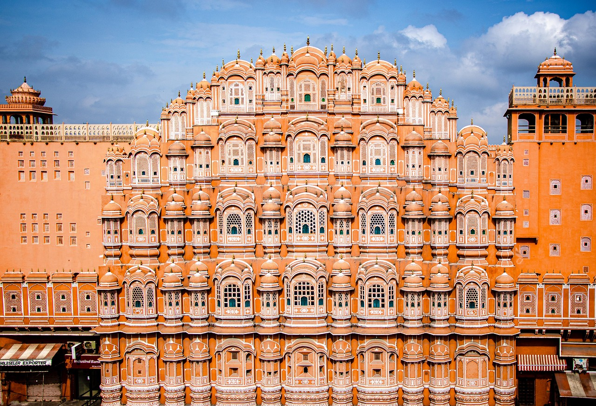
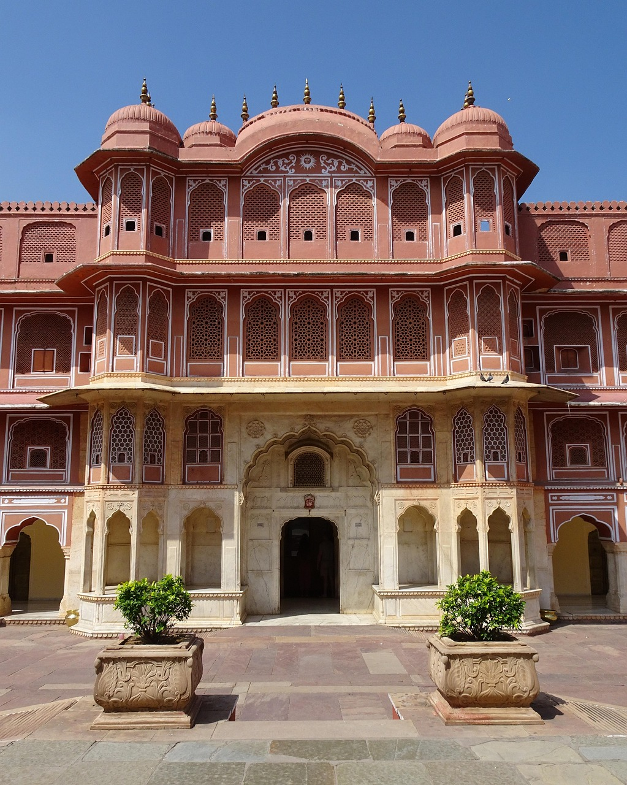
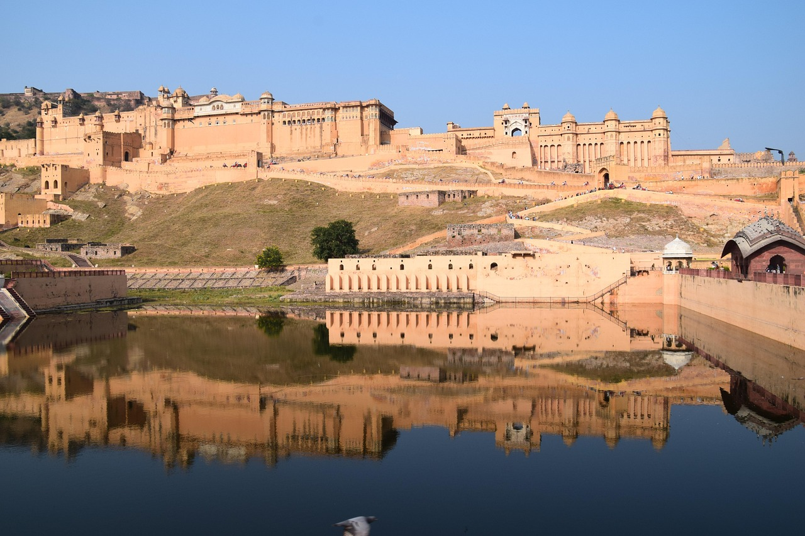

Wo Geschichte in lebendigem Terrakotta-Rosa an den Wänden atmet.
Fahre über die Bilder, um mehr zu erfahren



Hoch über den Palästen von Jaipur thront die mächtige Festung Jaigarh Fort. Sie galt als unbezwingbar und beherbergte nicht nur die größte Kanone auf Rädern weltweit, sondern auch ein düsteres Geheimnis: Sie war die Schatzkammer der Maharajas von Jaipur.
Über Jahrhunderte flüsterten sich die Menschen Legenden über den Kachwaha-Schatz zu. Es hieß, die Herrscher hätten dort tonnenweise Goldbarren, Diamanten und Smaragde in tiefen, unterirdischen Wassertanks versteckt – Beute aus erfolgreichen Feldzügen für das Mogulreich im 16. Jahrhundert. Niemand kannte den genauen Ort, außer dem amtierenden Maharaja und einer handverlesenen Garde von Wächtern.
Im Jahr 1976 – während Indien sich in einem politisch extrem angespannten Ausnahmezustand befand – beschloss die damalige indische Premierministerin Indira Gandhi, dem Mythos ein Ende zu setzen. Sie vermutete, dass die Königsfamilie von Jaipur unvorstellbare Reichtümer vor dem Staat versteckte.
Am 10. Juni 1976 passierte das Unfassbare: Eine Spezialeinheit der indischen Armee riegelte Jaigarh Fort komplett ab. Der Tourismus wurde gestoppt und Militärexperten rückten mit Metalldetektoren an. Fünf Monate lang gruben Soldaten die Festung um und leerten die gigantischen, unterirdischen Wasserspeicher.
Nach Monaten intensiver Grabungen brach die Regierung die Suche im November 1976 plötzlich ab. Die offizielle Verlautbarung lautete: Es wurde absolut nichts gefunden.
Doch die Einwohner von Jaipur glauben der Geschichte bis heute nicht. Denn genau in den Tagen, als die Armee abzog, wurde der Delhi-Jaipur-Highway für den gesamten öffentlichen Verkehr komplett gesperrt – unter strengster militärischer Bewachung. Augenzeugen berichteten von einer Kolonne schwerer Militärlastwagen, die tief in der Nacht aus der Festung fuhren und direkt in Richtung der indischen Zentralbank eskortiert wurden.
Wurde der legendäre Schatz heimlich abtransportiert, um einen Staatsbankrott zu verhindern? Oder war die Suche wirklich vergeblich? Jaigarh Fort schweigt bis heute beharrlich über sein Geheimnis.